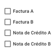
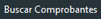
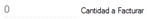
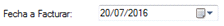
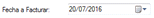
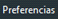

1. Debe hacer clic en el botón y se le abrirá una nueva ventana de
Facturación de aquellos pedidos aún no facturados.
2. Debe seleccionar el/los tipos de comprobantes que desea ver dentro de las siguientes
opciones:.
3. Una vez seleccionada la opción, dar clic en el botón  y se completará la
grilla con aquellos pedidos que cumplan las condiciones dadas.
4. Usted puede seleccionar todos con el botón o bien seleccionar
comprobante por comprobante. En cualquier momento, puede observar cuantos
comprobantes se han seleccionado en el campo . TOPIC: SI
DESEA CONOCER LOS ÚLTIMOS NÚMEROS
DE CORRELACIÓN DE LOS COMPROBANTES DAR CLIC EN EL BOTÓN .
5.Debemos definir la fecha de facturación en .Luego, para
comenzar con la facturación debe dar clic en el botón.